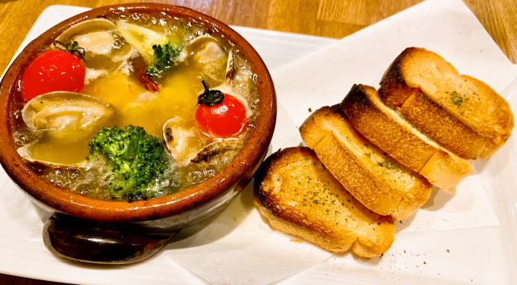
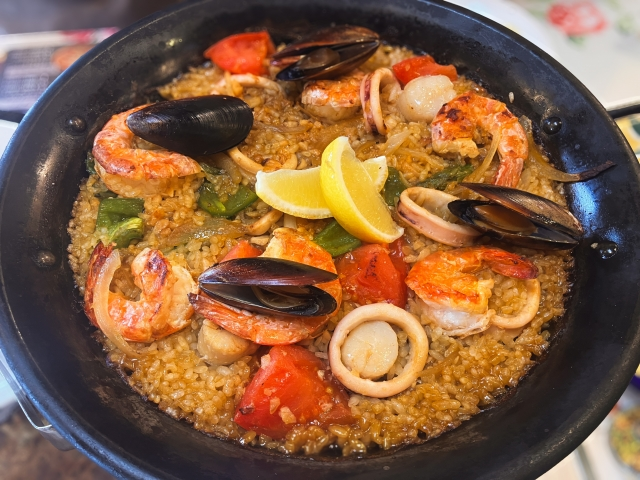
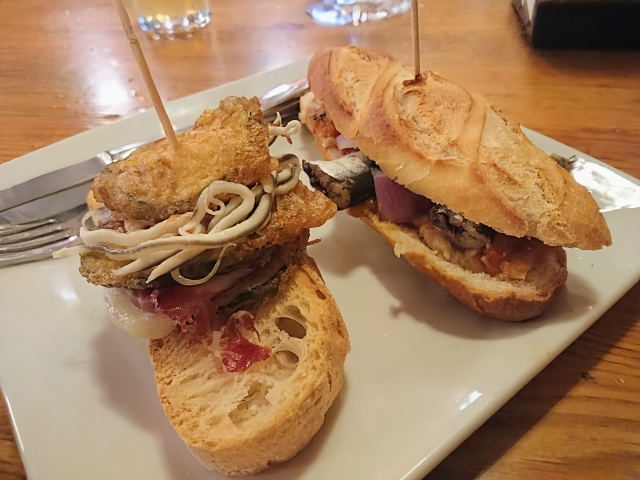

アヒージョ
オリーブオイルとニンニクで魚介や野菜などを煮込んだものです. アヒージョはスペイン語で「ajillo」と書き, 小さなニンニクという ニュアンスを持ちます. 下で紹介するタパスの一種で, スペインでは食事の前や軽い飲み物として楽しまれています.

パエリア
スペイン東部のバレンシア地方発祥の伝統的なコメ料理です. 平たい専用鍋を用い, 肉や魚介, 野菜などの具材をコメと一緒に 炒め, サフランで色と香りをつけたスープで炊き上げます. コメの品種はバレンシア米, ボンバ米を用い, スープをよく吸います.

タパス
スペイン発祥の小皿料理の総称です. お酒のおつまみとして少しずつ 楽しむ文化で, オリーブなどの渇き物から, アヒージョや煮込みなどの 温製料理まで種類が様々です.